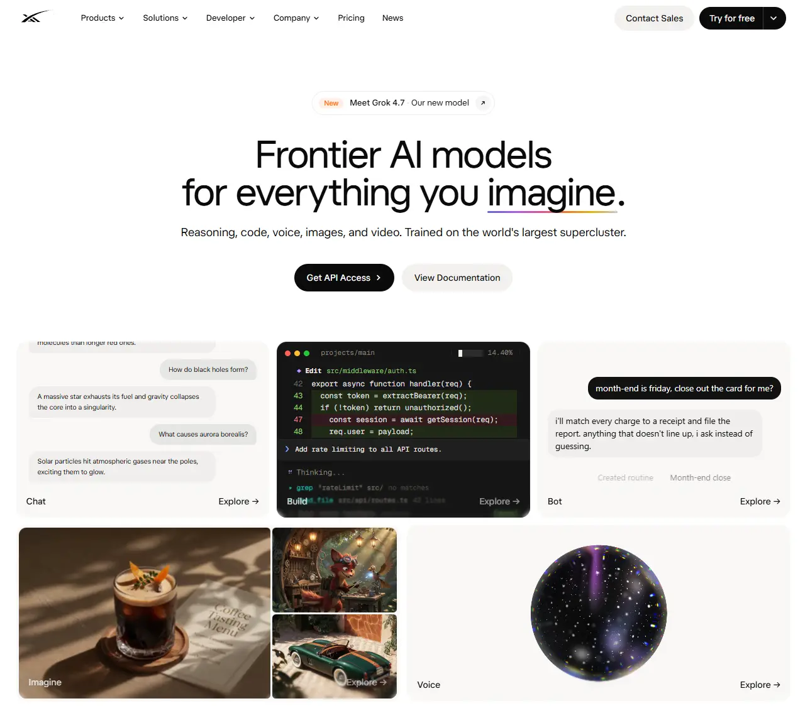

xAI
- Сервисы и приложения
- ИИ-сервисы
- Минимализм
- Утилитарный техно
- Сайт жив

Что это
Корпоративный сайт компании xAI, создателя чат-бота Grok. Светлая витрина с крупным центрированным заголовком, двумя кнопками-капсулами и сеткой из пяти продуктовых плиток; анимированный логотип нарисован векторным рантаймом. Аккуратный информативный сайт ИИ-компании Илона Маска.
Чем интересен
- Сайт полностью переписан между апрелем и сентябрём 2026: архивная версия начала апреля — ещё старый xAI на webpack с заголовком про человечество и меню вокруг Grok, тогда как текущая — SpaceXAI с серверными компонентами, сборкой Turbopack и новым меню из продуктов, решений, разработчиков и компании.
- Логотип в шапке — не SVG и не гифка, а векторная анимация: страница грузит рантайм на 717 килобайт ради одного файла логотипа на 12 килобайт.
- Заголовок первого экрана меняет последнее слово: два независимых рендера дали «imagine» и «build», причём слово визуально выделено — то есть это осмысленная ротация, а не случайная разница версий.
- Трекинг-слой очень тяжёлый: 176 запросов и 2,87 мегабайта на мобильной загрузке, четырнадцать сторонних сервисов и восемьдесят скриптов, из которых сторонний код — почти половина трафика; при этом сдвигов макета нет вовсе.
- Собственная политика безопасности блокирует часть собственных же пикселей: в консоли зафиксированы нарушения для счётчика Cloudflare и хелперов синхронизации — редкий случай, когда защита настроена строже, чем интеграции.
- В robots.txt объявлена позиция по использованию контента: обучение ИИ, поиск и подача в ответы разрешены — прямо противоположно тому, что выбрала платформа Ploy из этой же партии.
Паспорт
- Домен
- x.ai
- Тип сайта
- Многостраничный
- Категории
- Сервисы и приложения
- Подкатегории
- ИИ-сервисы
- Для кого
- Разработчикам, Продуктовым командам, Обычным пользователям
- Стиль
- Минимализм, Утилитарный техно
- Язык
- Английский
- Страна
- США
- Автор
- не указано
- Год
- 2026
- Добавлен в коллекцию
- 05.10.2026
Палитра
-
#FDFDFC— 74% кадра -
#171716— 12% кадра -
#453425— 5% кадра -
#756556— 3% кадра -
#D3CBBF— 2% кадра
- Режим
- Светлая
- Цвет фона
- Нейтральный
Технические факты
- HTTPS
- да
- Meta viewport
- да
- Title
- SpaceXAI (8 симв.)
- Description
- SpaceXAI builds Grok — frontier AI models for reasoning, voice, image generation, and more. Build with the Grok API. (116 симв.)
- Open Graph
- да
- Структурированные данные
- не измерено
- Sitemap
- существует и объявлен в robots, но содержимое прочитать не удалось: прямой запрос блокируется Cloudflare
- Robots
- есть, получен напрямую: разрешён обход корня, закрыт служебный раздел инструментов, указана карта сайта и декларация Content-Signal с разрешением обучения ИИ
- Аналитика
- Google Tag Manager (GTM-MSD4MG6C), Google Analytics 4 (G-Y57KB83RE7), Google Ads и DoubleClick (AW-18347536691), Meta Pixel с серверной автоматизацией (2893130651053628), серверный Google Tag Manager на Cloud Run, LinkedIn Insight Tag, TikTok Pixel, Reddit Pixel, X и Twitter Pixel, Snapchat Pixel, Tapad, Hightouch Events, Mixpanel, OneTrust (управление согласиями), Cloudflare Web Analytics — запрос блокируется собственной политикой безопасности сайта
- Проверено ссылок
- 12
- Битые ссылки
- нет
- Контакты
- не определено: подвал страницы в снимок не попал, разметка недоступна; в архивной версии были разделы продуктов, API, компании и ресурсов
- Юридическая информация
- отдельного юридического блока получить не удалось; подтверждено наличие управления согласиями OneTrust, маршрутов политики, безопасности и правовой информации в структуре приложения и отдельного центра доверия на поддомене; юридическое лицо, адрес и реквизиты не получены
Технологии с доказательствами
- Next.js с серверными компонентами — ассеты из служебного каталога сборки, заголовки предрендера и времени жизни кэша, поток серверных компонентов и флайт-запросы к страницам продуктов и новостей
- Turbopack — запрошен служебный чанк с именем turbopack; в архивной версии апреля 2026 на том же месте был чанк webpack
- Vercel — к каждому ассету подклеен идентификатор развёртывания; в политике безопасности разрешено хранилище Vercel Blob
- Cloudflare — заголовки сервера, состояние кэша, служебная cookie управления ботами и скрипт проверки
- Rive — запрошены рантайм rive.wasm весом 717 килобайт и файл анимации логотипа на 12 килобайт
- Самохостинг шрифтов через next/font — два вариативных файла, включая Geist Mono, оба с предзагрузкой; сторонние шрифтовые сервисы не запрашивались
- Генерация изображений для соцсетей — маршруты вида opengraph-image с хешами на главной, в разделах компании, новостей и вакансий, все размером 2400 на 1260
- Cloudflare Images — адреса медиа с параметрами масштабирования и автоматического формата
- Строгая политика безопасности и HSTS — заголовок Content-Security-Policy с поимёнными списками доменов и требованием перевода на HTTPS, плюс строгий транспортный заголовок на год
- Разрешено политикой, но не подтверждено запросами — в списках разрешений есть трёхмерный редактор Spline, шрифтовый сервис Typekit, служба вакансий Greenhouse, картографические тайлы Stadia Maps и видео YouTube; фактических обращений к ним в измеренном прогоне нет
- Не подтверждено — наличие Tailwind, three.js, GSAP, Lenis и Lottie ни в одном признаке не обнаружено; сырой HTML недоступен, поэтому отрицать их наличие нельзя
- Аналитика — Tag Manager, GA4, рекламные пиксели Google, Meta с серверной автоматизацией, LinkedIn, TikTok, Reddit, X, Snapchat, Tapad, Hightouch, Mixpanel, управление согласиями OneTrust и серверный сбор конверсий на Cloud Run
Что смотреть в первую очередь
Смотреть как пример корпоративной витрины ИИ-компании, где инженерия ушла в инфраструктуру: серверные компоненты с предзагрузкой маршрутов, векторная анимация логотипа, генерация картинок для соцсетей на каждый маршрут и серверный сбор конверсий — при внешне простой светлой странице.